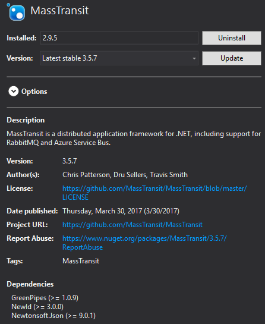
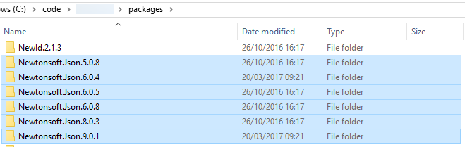
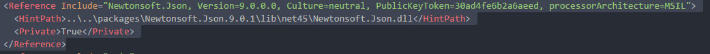
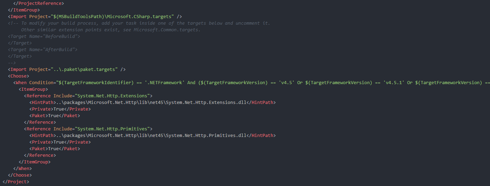
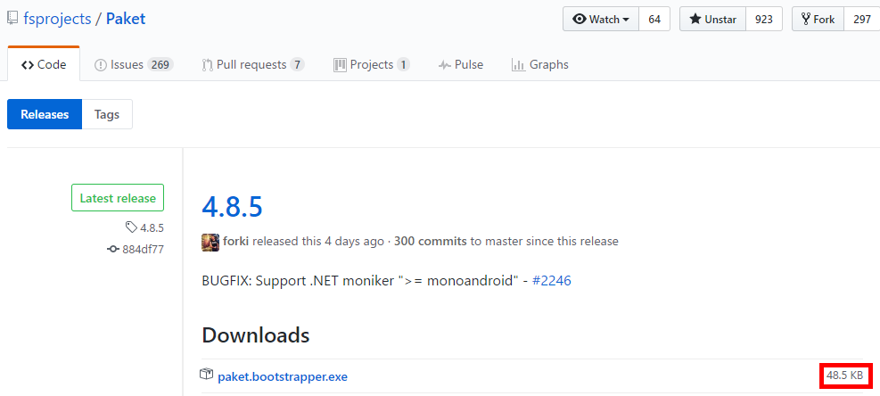
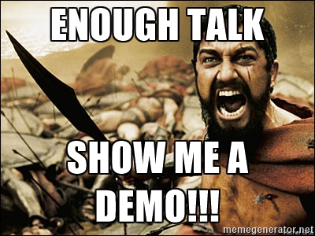
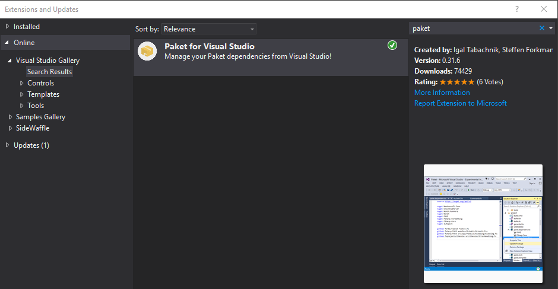

Full name: Microsoft.FSharp.Core.Operators.id
The Three Ways!

The First Way
Systems Thinking
Value Streams
From Requirements to shipped software to customers!
So, what's the solution!?
PAKET
Dependency Manager for .NET (and Mono)

designed to work well with NuGet packages and also enables referencing files directly from Git repositories or any HTTP resource. It enables precise and predictable control over what packages the projects within your application reference.
Known problems
NuGet (the command tool) has no concept of transitive dependencies

NuGet puts the package version in the path

Updates may require manual work (specially if you update framework)

How PAKET does it?

Paket fully supports Semantic Versioning, and, currently, NuGet doesn’t (NuGet currently only supports SemVer 1.0.0).
NuGet does not support SemVer-compatible (v2.0.0) prerelease numbers with dot notation, as in 1.0.1-build.23. You can use a form like 1.0.1-build23 but this is always considered a pre-release version.
in PreRelease Semantic Versioning
Plan to implement SemVer 2.0.0 support
PAKET is composed by paket.bootstrapper.exe
- Don't need to commit paket.exe to your repository
- Bootstrapper is available for download - Bootstrapper
- Bootstrapper allows to download latest paket.exe
- Can be used for CI build or from inside Visual Studio

Paket.exe (.paket directory in root)
1:
|
|
Global definition of dependencies
paket.dependencies (in solution root)
1: 2: 3: 4: 5: 6: 7: 8: 9: 10: 11: 12: 13: 14: 15: 16: 17: 18: 19: 20: |
|
List of used versions for all dependencies
paket.lock (generated from paket install)
1: 2: 3: 4: 5: 6: 7: 8: 9: |
|
Dependency definition per project ("replaces" packages.config)
paket.references (in each project folder)
1: 2: |
|
Package definition for new packages
paket.template replaces the need for .nuspec file
1: 2: 3: 4: 5: 6: 7: 8: |
|

Some References
- ElasticSearch.NET uses this in their .NET tools and libraries
- Jet.com (e-commerce platform recently acquired by Walmart by 3bn $)
DEMO

RECAP
- Plain text over Command line tool
- Direct vs. transitive dependencies
- Only one version of a package
There's also a VS extension - Paket.VisualStudio
Q&A
Paket - Project Principles:
- Integrate well into the existing NuGet ecosystem
- Make things work with minimal tooling (plain text files)
- Make it work on all platforms
- Automate everything
- Create a nice community